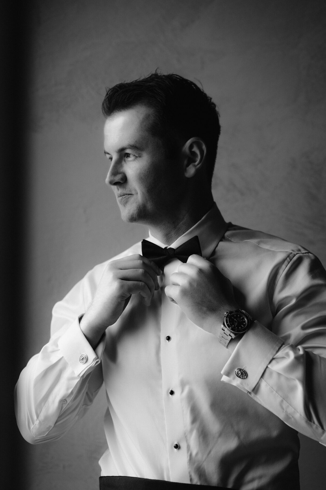
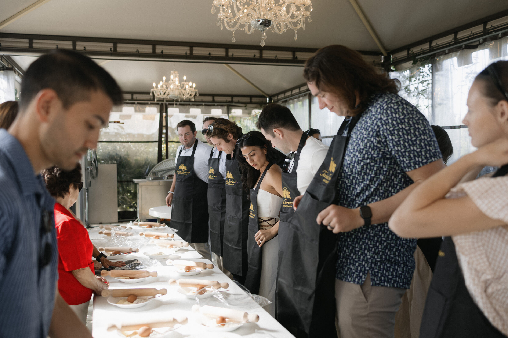
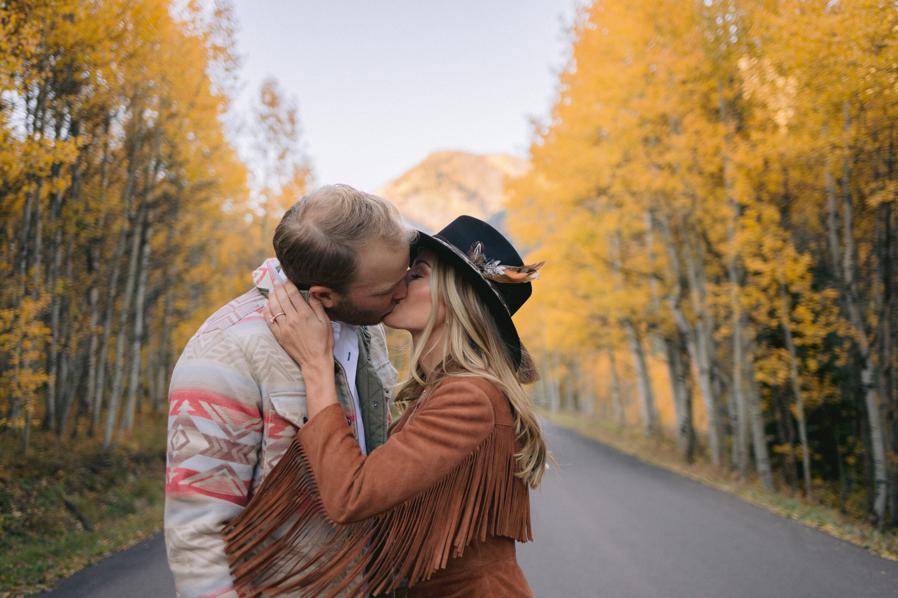
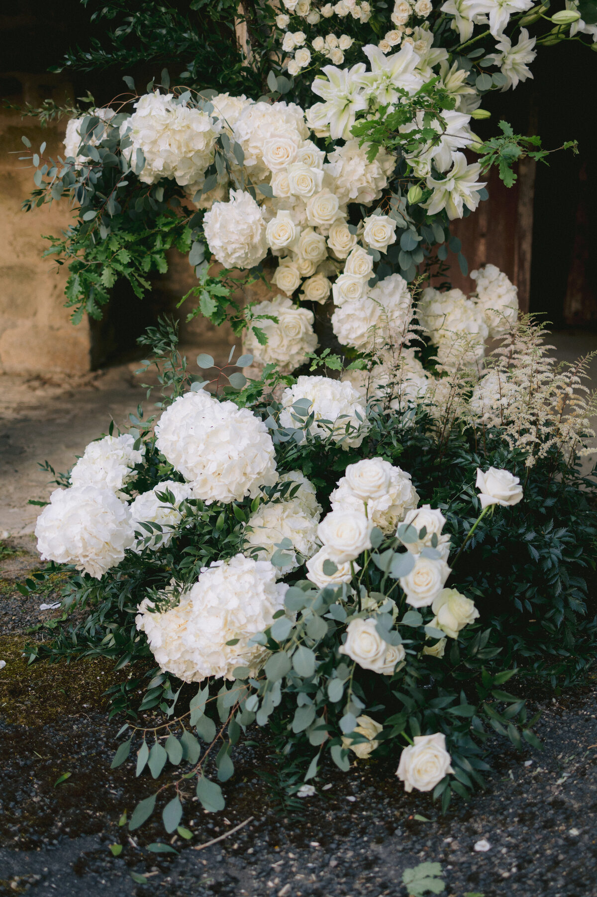

I fell in love with photography the same way most people fall in love — slowly, then all at once. What started as a fascination with light and shadow turned into a calling to document the most meaningful day of people's lives.
Based in Texas, I travel wherever the story takes me. My work has brought me from private chateaux in the French countryside to golden aspen groves in Colorado, from candlelit ceremonies in Tuscan vineyards to engagement sessions across New York City.
No matter the destination, my focus remains the same: capturing genuine emotion with an unhurried, artistic eye. I believe the most powerful photographs aren't posed — they're felt. And I work to create the kind of calm, trust-filled environment where those moments can unfold naturally.
Let's Work Together


I'd love to hear your story and learn about the day you're planning.
Get in Touch